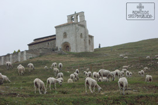

-
El día 27 de Julio del año 2007, con motivo de la celebración del VIII centenario de la consagración de la Ermita Románica de San Pantaleón, en el Valle de Losa, un grupo de amigos, amantes de este maravilloso Monumento y de su entorno, decidimos asociarnos y comenzar a trabajar, con unos objetivos muy claros de promoción, mantenimiento y mejora de dicho lugar.
- 
{kind=link}
La Asociación Amigos de San Pantaleón es una asociación cultural sin ánimo de lucro. Entre otras actividades impulsamos diversas iniciativas, en colaboración con las instituciones civiles y religiosas y con los vecinos de San Pantaleón de Losa y alrededores, con el objetivo de revitalizar y publicitar la región y su rico patrimonio histórico-artístico, natural, etnográfico y cultural.
Si deseas formar parte de nuestra Asociación y así contribuir a que
un lugar como San Pantaleón tenga lo que se merece, cuantos más
seamos más fuerza tendremos y mayores cosas podremos conseguir. Si
así lo deseas puedes ponerte en contacto con nosotros, visita nuestro
apartado de  contacto.
contacto.